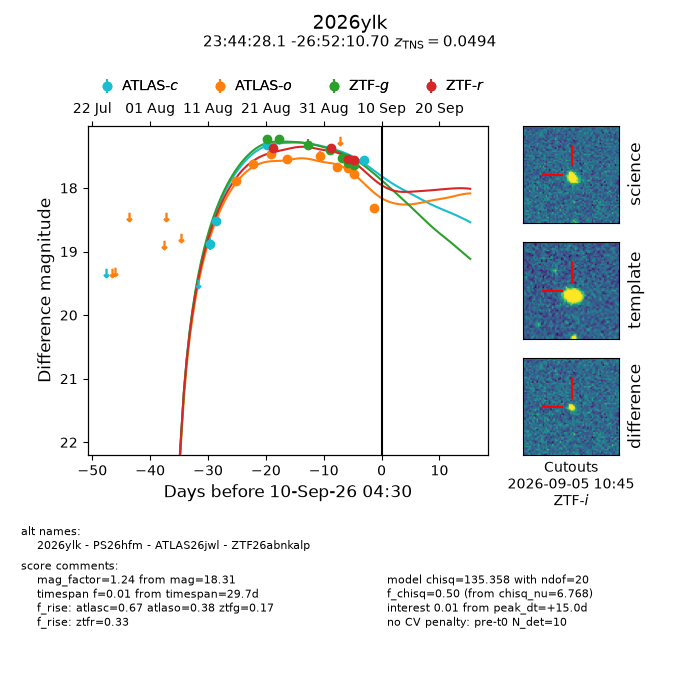
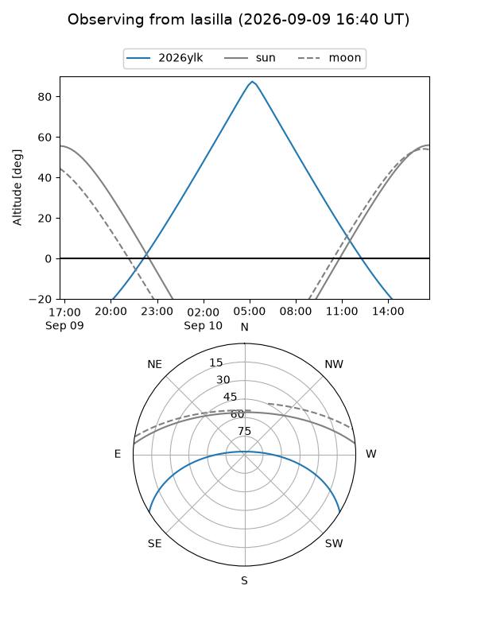
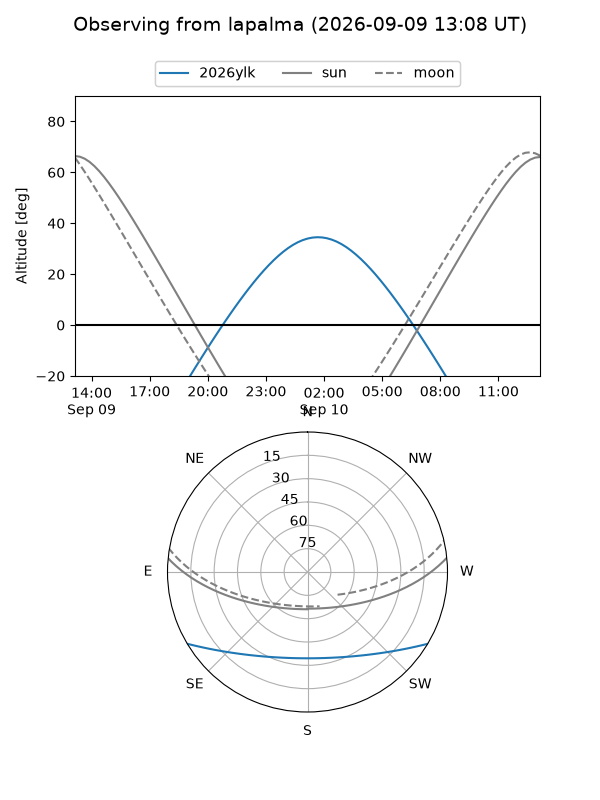
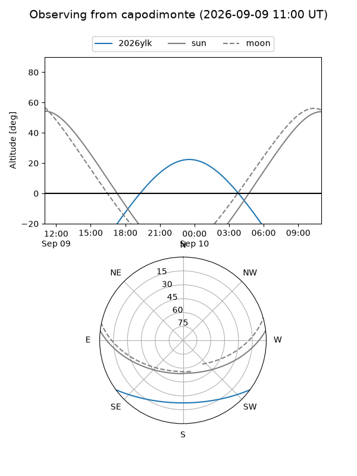
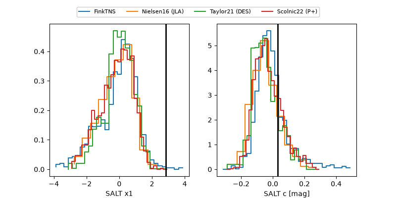

2026ylk
Target 2026ylk at 2026-09-10 04:32
Aliases and brokers:
FINK-ZTF: ztf.fink-portal.org/ZTF26abnkalp
Lasair-ZTF: lasair-ztf.lsst.ac.uk/objects/ZTF26abnkalp
ALeRCE-ZTF: alerce.online/object/ZTF26abnkalp
YSE-PZ: ziggy.ucolick.org/yse/transient_detail/2026ylk
TNS name: wis-tns.org/object/2026ylk
Direct TNS query: direct search
alt names
ZTF26abnkalp (ztf,fink_ztf)
2026ylk (tns,yse)
PS26hfm (panstarrs)
ATLAS26jwl (atlas)
Coordinates:
equatorial (ra, dec) = 356.1169,-26.86964
equatorial (HMS+DMS) = 23:44:28.06,-26:52:10.70
galactic (l, b) = (30.0961,-75.09093)
Flags:
TNS type: SN Ia
TNS redshift: 0.0494
peak dt: +15.0
Photometry:
last atlasc=17.57, atlaso=18.31, ztfg=17.63, ztfr=17.56
4 atlasc, 9 atlaso, 7 ztfg, 4 ztfr detections
Lightcurve

Visibility



Additional plots
